31We assume that 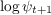 and 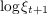 are normally distributed with means 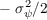 and  and variances
and variances  and 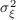 (so that 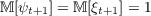), where 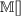 is the mean operator defined
below.
and 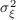 (so that 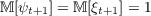), where 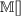 is the mean operator defined
below.
31We assume that 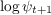 and 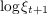 are normally distributed with means 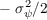 and
and variances and 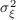 (so that 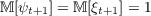), where 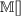 is the mean operator defined
below.